对话记录
启动时留一行事实；结束时留一组结果。它回答“发生过什么”，不会持续滚动完整 child transcript。
大方向已经收敛：保留 C 的生命周期分工，但实时界面采用 Claude Code 的下方 roster。这里不再比较“放上面还是下面”，只比较下方 roster 的三种信息密度。
这不是把旧 C 全盘推翻。保留的是“运行态与永久历史分工”；被替换的是编辑器上方的 bounded activity widget。最终只保留一个下方 roster，不再重复显示同一批 Agent。
启动时留一行事实；结束时留一组结果。它回答“发生过什么”，不会持续滚动完整 child transcript。
只放一个 Claude 风格 roster。它回答“现在有哪些会话、哪一个被选中、各自处于什么状态”。
Enter 打开全宽、divider-led、非浮动的 Agent 详情 / 会话。这里承担 steer、stop、resume 与完整对话。
| 表面 | 保留什么 | 明确不放什么 |
|---|---|---|
| Transcript | launch、settled summary、失败或需要用户处理的事件 | 持续 live activity、完整 child conversation |
| Below-editor roster | main、Agent、任务、当前状态、选择态 | tool 日志、长结果预览、第二份 statusline 计数 |
| Command Dialog | 完整会话、控制、局部详情 | 居中 overlay、覆盖在 transcript 上的浮窗 |
三种方案共享同一套 Pi 键盘实现：编辑器为空时按 ↓ 进入，方向键选择，Enter 查看，Esc 返回。capture 对三种方案都验证了进入与选择；A 另外验证了 Enter 打开详情、Esc 恢复 roster/footer，以及普通文字不会被 roster 吞掉。
main 与每个 Agent 各占一行；任务在左，时间 / 队列 / 完成统计在右。默认圆点停在 main；进入管理后，实心圆跟随选择。没有分组标题，也没有实时 tool 行。
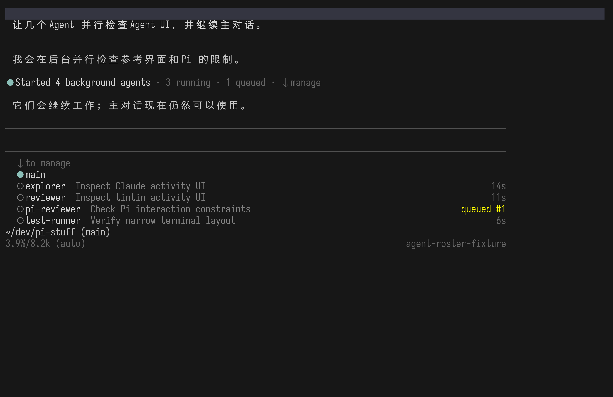
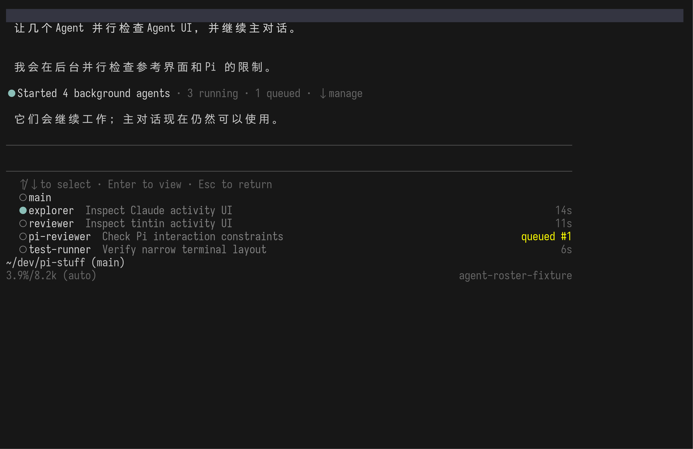
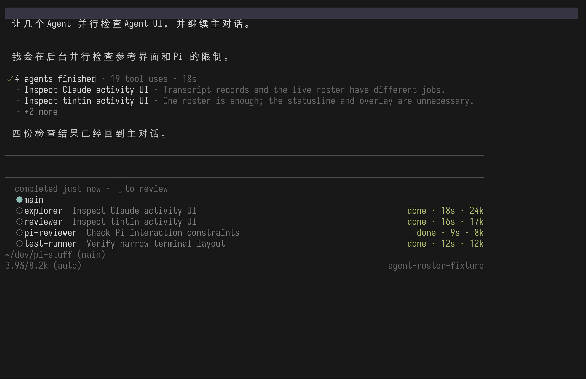
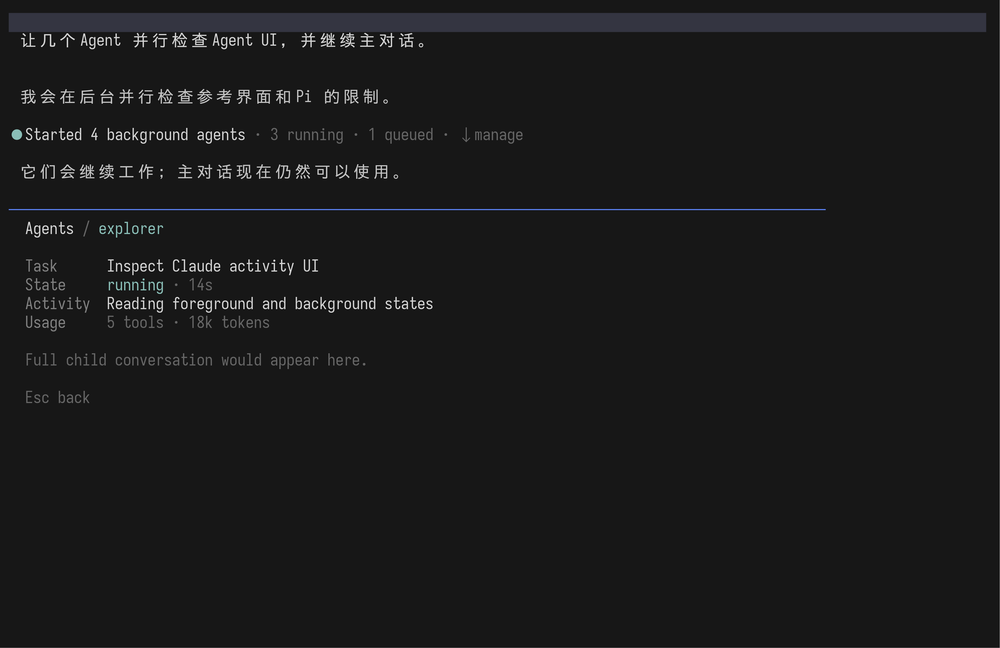
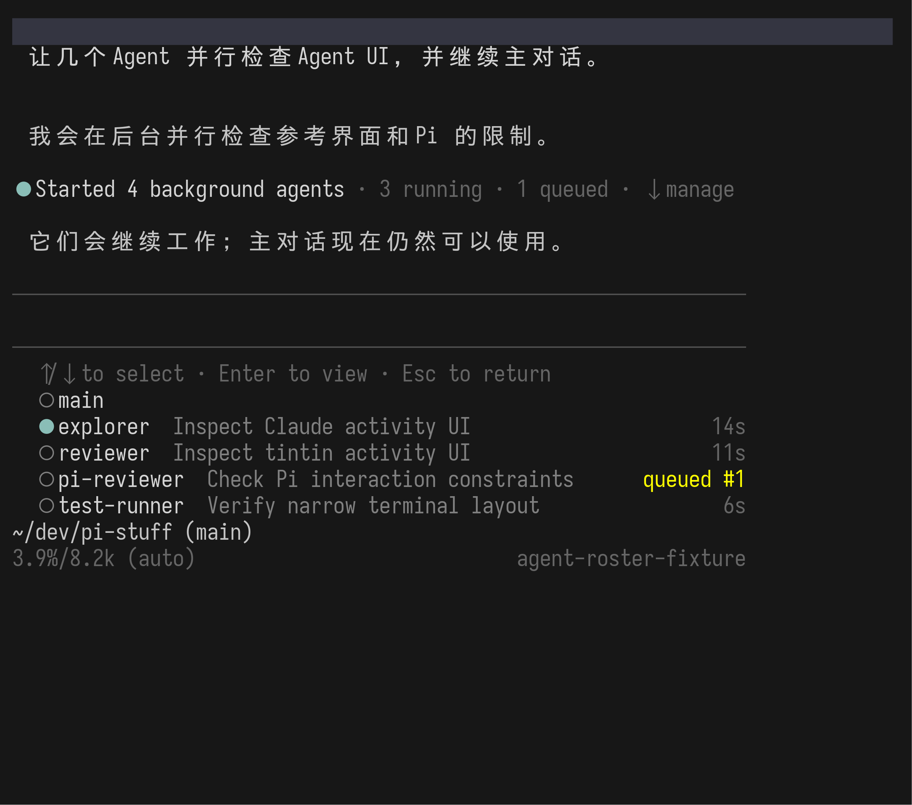
+N more 或最终最大高度。用户不需要理解“batch ownership”或“session rail”；看到名字、任务和状态就能直接使用。它也是三者中最接近真实 Claude roster 的。
Agent 很多时不能无限向下长。实现阶段仍需决定显示上限、+N more 规则与完成项 linger 时间。
每个 Agent 仍有一行，同时增加“UI references / Pi validation”等批次标题和组内统计。它说明 Agent 从哪一轮工作产生，却持续占用更多终端高度。
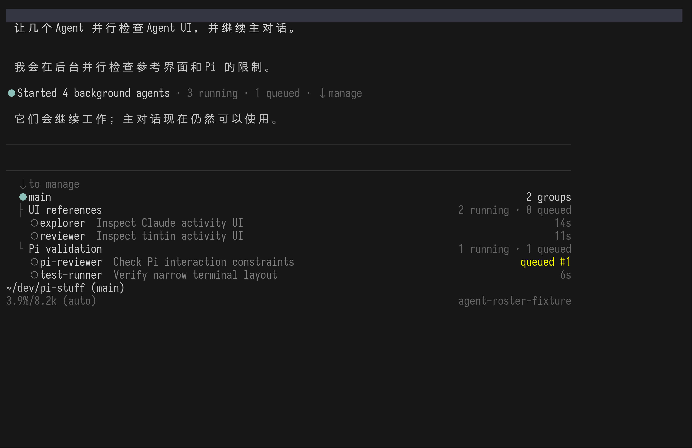
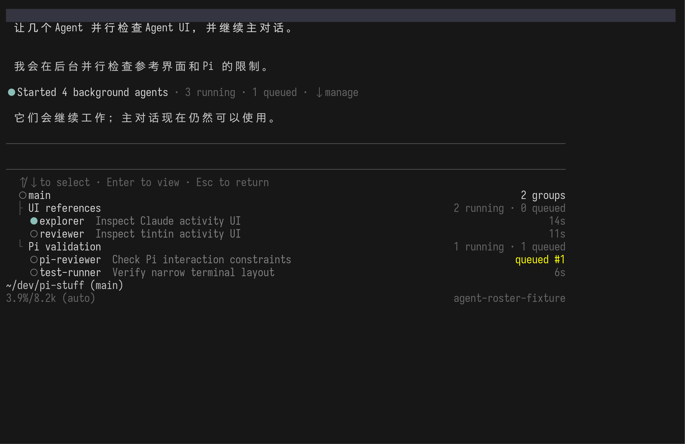
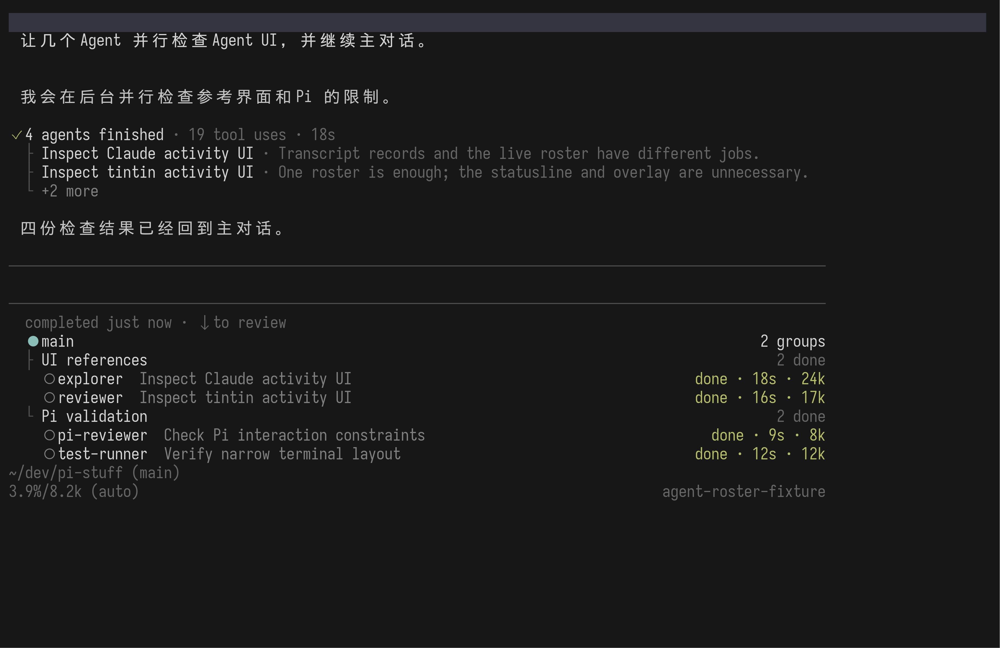
多个长期 team / batch 同时运行，而且用户经常需要按来源判断状态时，分组会有价值。
Pi Stuff 已决定 transcript 负责“这批工作为何产生”。roster 再复述一次批次结构，职责不够干净。
第一行只列 session 名称，第二行只解释当前选中项。它适合少量、名字短的会话；任务、排队与耗时不能同时扫读。
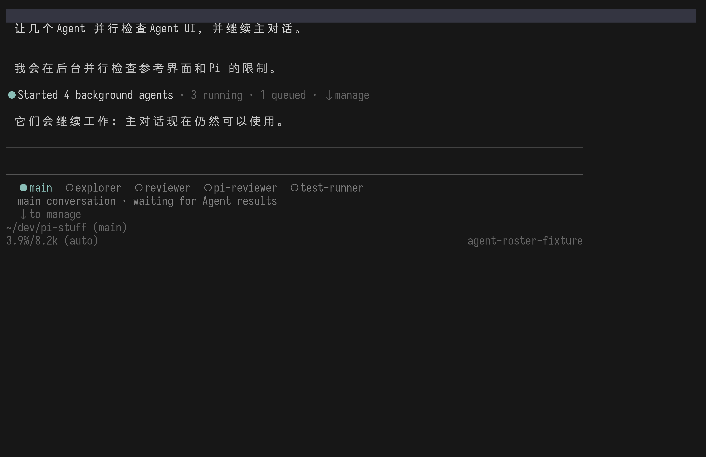
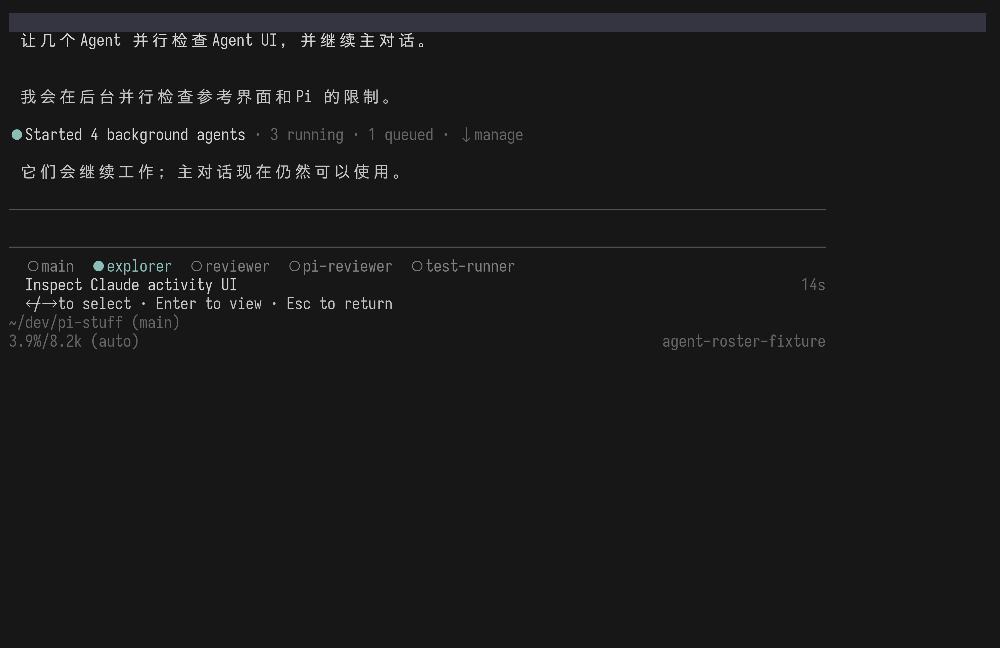
+more。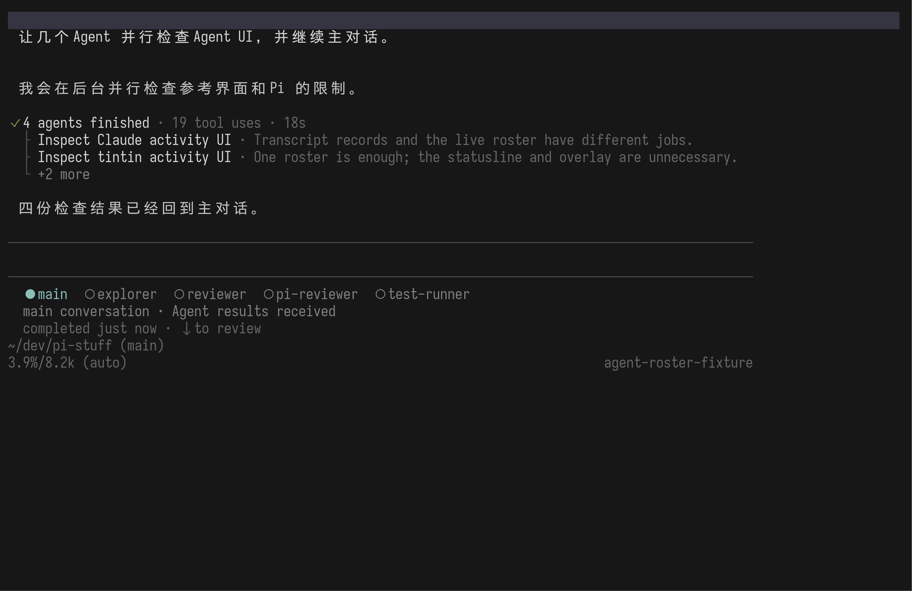
对 transcript 的垂直空间影响最小；结构也没有 card、tree 或浮窗。
它把“看一眼就知道所有 Agent 状态”变成“先进入 roster，再逐个切换”，不符合我们采用 Claude roster 的主要理由。
以下画面来自第三次独立的 2.1.197 黑盒运行。先让两个前台 Agent 工作，再在空编辑器按 ↓、继续选择 child、按 Enter。此前“↓ 是否真的可管理”这个缺口已经补上。
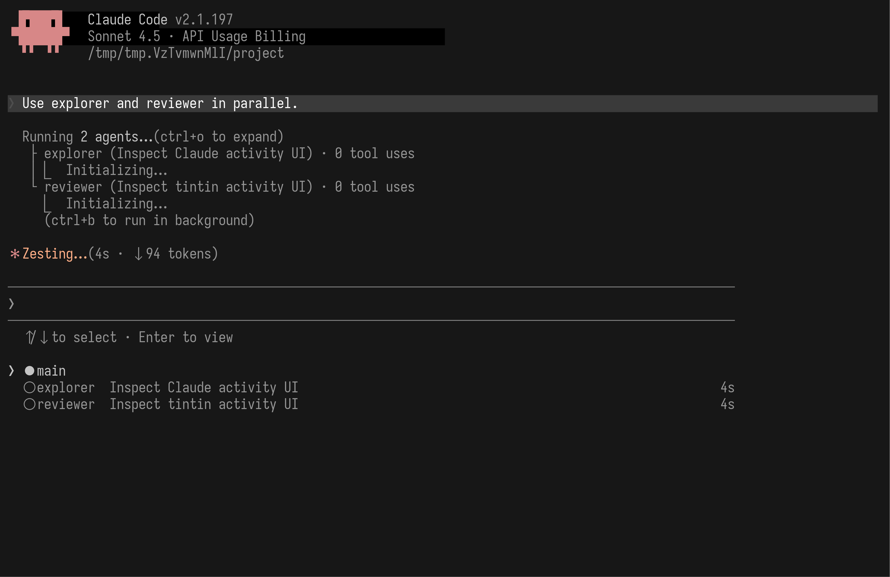
↑/↓ to select · Enter to view，实心圆位于 main。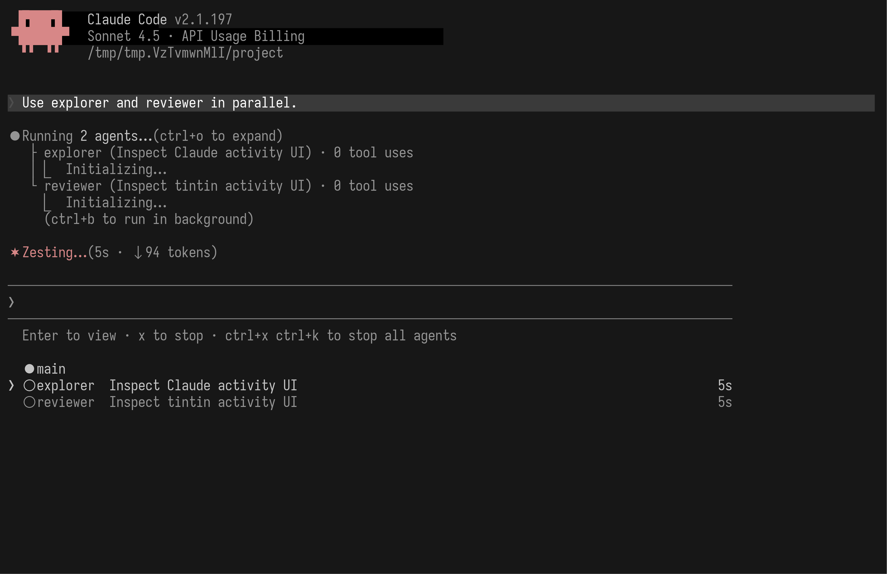
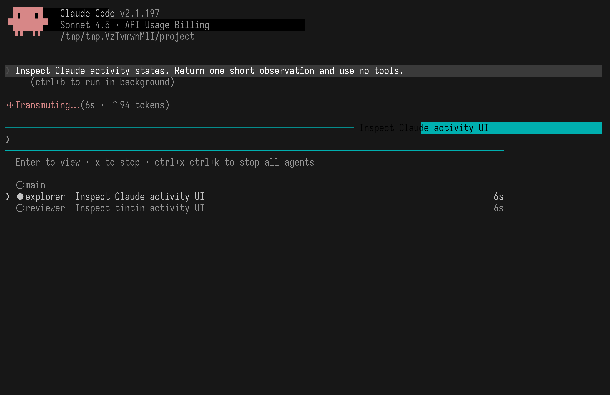


它与 Claude Code 的使用体验最接近，同时能由 Pi 的公开 API 自然实现。B 的批次关系已经存在于 transcript；C 又隐藏了我们最想保留的“一眼看全局”。因此默认 roster 不需要发明新的结构。
+N more 放在哪一行。这些应该在真实 fork 接入后用 1、4、10 个 Agent 的状态帧决定，不必现在凭术语讨论。上一份 Agent activity location report 证明了 transcript 与 live state 应分工，也暴露了 above-editor widget 的重复密度。当前报告继承它的生命周期结论，替换其空间结论。新的 Pi 画面由 capture script 一次生成；fixture tool 不执行模型、网络、文件或 shell I/O。Claude 画面由 pinned-release capture 生成，脚本同时校验版本与发布二进制 SHA-256。